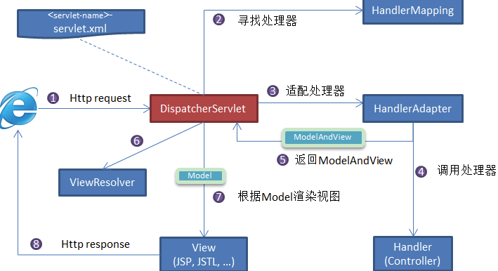
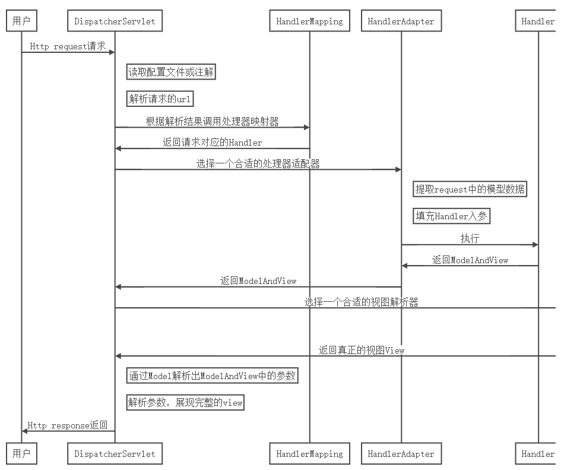

拷贝自：http://blog.csdn.net/eson_15/article/details/51689023
SpringMVC流程示意图：

springmvc的执行流程分析
向服务器发送Http request请求，请求被前端控制器（DispatcherServlet）捕获。
前端控制器根据xml文件中的配置（或者注解）对请求的URL进行解析，得到请求资源标识符（URI）。然后根据该URI，调用处理器映射器（HandlerMapping）获得处理该请求的Handler以及Handler对应的拦截器，最后以 HandlerExecutionChain 对象的形式返回。
前端控制器根据获得的Handler，选择一个合适的处理器适配器（HandlerAdapter）去执行该Handler。
处理器适配器提取request中的模型数据，填充Handler入参，执行处理器（Handler）（也称之为Controller）.
Handler(Controller)执行完成后，向处理器适配器返回一个ModelAndView对象，处理器适配器再向前端控制器返回该ModelAndView对象（ModelAndView只是一个逻辑视图）。
根据返回的ModelAndView，前端控制器请求一个适合的视图解析器（ViewResolver）（必须是已经注册到Spring容器中的ViewResolver）去进行视图解析，然后视图解析器向前端控制器返回一个真正的视图View（jsp）。
前端控制器通过Model解析出ModelAndView中的参数进行解析，最终展现出完整的View并通过Http response返回给客户端。
上面描述了一下springmvc的执行流程，如果还是有点模糊的话，我用下面这个流程图来表示一下，也为了自己更好的理解整个执行流程：

经过这么一分析，现在对springmvc的执行流程有了宏观上的了解了，从上面的分析可以看出，springmvc有几个主要的组件，下面结合我们编程，来分析一下这几个组件：
- 前端控制器DispatcherServlet（不需要程序员开发）。
作用：接收请求，响应结果，相当于转发器，中央处理器。有了DispatcherServlet减少了其它组件之间的耦合度。 - 处理器映射器HandlerMapping（不需要程序员开发）。
作用：根据请求的url查找Handler。 - 处理器适配器HandlerAdapter（不需要程序员开发）。
作用：按照特定规则（HandlerAdapter要求的规则）去执行Handler。 - 处理器Handler（需要程序员开发）。
注意：编写Handler时按照HandlerAdapter的要求去做，这样适配器才可以去正确执行Handler - 视图解析器ViewResolver（不需要程序员开发）。
作用：进行视图解析，根据逻辑视图名解析成真正的视图（view） - 视图View（需要程序员开发jsp）。
View是一个接口，实现类支持不同的View类型（jsp、freemarker、pdf…）
【注】：不需要程序员开发的，需要程序员自己做一下配置即可。
现在看来，其实真正需要程序员开发的就两大块：一个是Handler，一个是jsp，这样的话，其实和struts2就差不多了，所以不要被上面那个一系列的流程给绕傻了。
整个springmvc的架构就总结到这吧，后面就要开始走进springmvc的世界了。
接下来的系列直接看 http://blog.csdn.net/eson_15/article/details/51689023 原版博客即可,这篇博客拷过来主要为了查找方便。